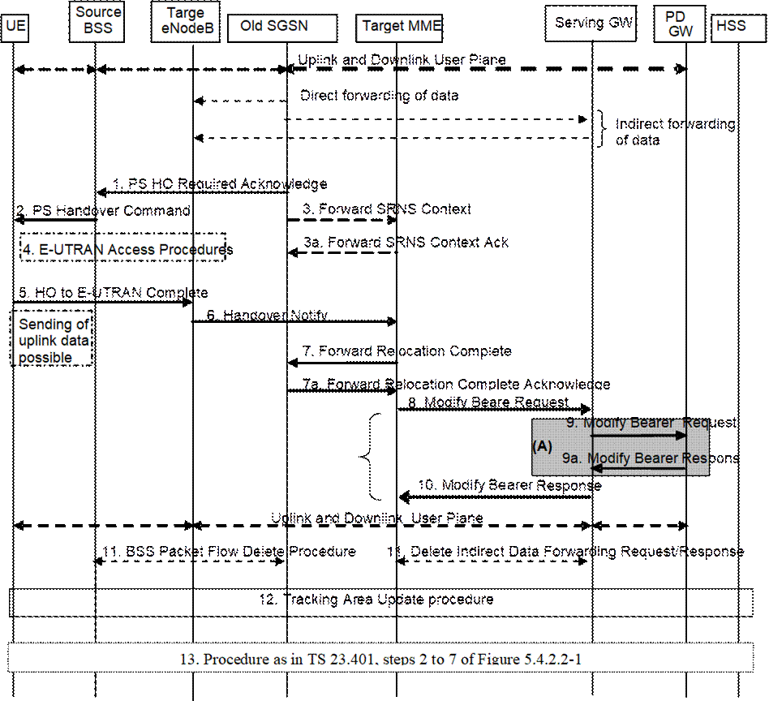
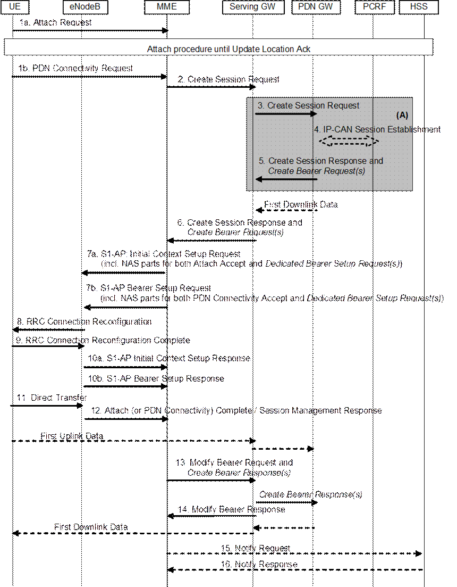

Figure D.3.8.3-1: GERAN A/Gb mode to E-UTRAN Inter RAT HO, execution phase
NOTE 1: For a PMIP-based S5/S8, procedure steps (A) are defined in TS 23.402 [2]. Steps 9 and 9a concern GTP based S5/S8.
The old SGSN continues to receive downlink and uplink user plane PDUs.
When old SGSN receives the Forward Relocation Response message it may start downlink N-PDU relay and duplication to the target eNodeB, and the target eNodeB may start blind transmission of downlink user data towards the UE over the allocated radio channels.
1. The Source SGSN completes the preparation phase towards Source BSS
by sending the message PS HO Required Acknowledge (TLLI, List of Set Up PFCs,
Target to Source Transparent Container). This message includes all PFIs that
could be established on the Target side.
Before sending the PS Handover Required Acknowledge message,
the source SGSN may suspend downlink data transfer for any PDP contexts.
Before sending the PS Handover Command message to the UE the
source BSS, may try to empty the downlink BSS buffer for any BSS PFCs.
NOTE 2: The Source SGSN acts as the old SGSN.
2. The Source BSS will command the UE to handover to the target
eNodeB via the message PS Handover Command. The access system specific message
to UE includes a transparent container including radio aspect parameters that the
Target eNodeB has set-up in the preparation phase.
3. There is no RAN context transfer during inter RAT handovers with E-UTRAN. If the source SGSN originates any SRNS contexts the MME acknowledges the receipt towards the SGSN and ignores the message content.
4. The UE moves to the E-UTRAN and performs access procedures toward
Target eNodeB.
5. When the UE has got access to Target eNodeB it sends the message HO
to E-UTRAN Complete. The UE shall implicitly derive the EPS bearers for which
an E-RAB was not established from the PS Handover Command and deactivate them
locally without an explicit NAS message at this step.
6. When the UE has successfully accessed the Target eNodeB, the
Target eNodeB informs the Target MME by sending the message Handover Notify.
Upon receipt of the Handover Notify message the target MME starts a timer if the target MME applies indirect forwarding.
7. Then the Target MME knows that the UE has arrived to the target side and Target MME informs the old SGSN by sending the Forward Relocation Complete () message. The old SGSN will also acknowledge that information. When the Forward Relocation Complete message has been received and there is no longer any need for the Old SGSN to forward data, the old SGSN stops data forwarding. A timer in old SGSN is started to supervise when resources shall be released.
8. The Target MME will now complete the Handover procedure by
informing the Serving GW (for Serving GW relocation this will be the Target
Serving GW) that the Target MME is now responsible for all the EPS bearers the
UE have established. This is performed in the message Modify Bearer Request
(Cause, MME Tunnel Endpoint Identifier for Control Plane, EPS Bearer ID(s), MME
Address for Control Plane, eNodeB Address(es) and TEID(s) for User Traffic for
the accepted EPS bearers, PDN GW addresses and TEIDs (for GTP-based S5/S8) or
GRE keys (for PMIP-based S5/S8) at the PDN GW(s) for uplink traffic and RAT
type) per PDN connection.
In case any EPS bearers are to be released the MME triggers the
bearer release procedure as specified in clause 5.4.4.2. If the Serving GW
receives a DL packet for a non-accepted bearer, the Serving GW drops the DL
packet and does not send a Downlink Data Notification to the MME.
NOTE 3: The text regarding "Target Serving GW" shall be ignored.
9. The Serving GW (for Serving GW relocation this will be the Target
Serving GW) informs the PDN GW(s) the change of, for example, for Serving GW
relocation or the RAT type, that e.g. can be used for charging, by sending the
message Modify Bearer Request per PDN connection. Serving Network should be
included in this message if it is received in step 4. For Serving GW
relocation, the Serving GW allocates DL TEIDs on S5/S8 even for non-accepted
bearers. The PDN GW must acknowledge the request with the message Modify Bearer
Response (APN Restriction). When the UE moves from Gn/Gp SGSN to the MME, the
PDN GW shall send the APN restriction of each bearer context to the
Serving GW.
If PCC infrastructure is used, the PDN GW informs the PCRF
about the change of, for example, the RAT type.
The Modify Bearer Response also indicates the identity of the default bearer and the Charging Id towards the S‑GW.
NOTE 4: The text regarding "Target Serving GW" shall be ignored.
10. The Serving GW (for Serving GW relocation this
will be the Target Serving GW) acknowledges the user plane switch to the Target
MME via the message Modify Bearer Response (Cause, Serving GW Tunnel Endpoint
Identifier for Control Plane, Serving GW (for Serving GW relocation this will
be the Target Serving GW) Address for Control Plane, Protocol Configuration
Options, PDN GW addresses and TEIDs (for GTP-based S5/S8) or GRE keys (for PMIP-based
S5/S8) at the PDN GW(s) for uplink traffic, APN Restriction).The Serving GW
shall forward the received APN Restriction to the MME. At this stage the user
plane path is established for all bearers between the UE, Target eNodeB,
Serving GW (for Serving GW relocation this will be the Target Serving GW) and
PDN GW.
In addition, the Modify Bearer Response indicates the identity of the default bearer towards the MME.
11. When the timer started in step 7 expires
the Source SGSN will clean-up all its resources towards Source BSS by
performing the BSS Packet Flow Delete procedure.
When the timer started in step 6 expires the target MME releases the resources that have been allocated for indirect forwarding.
NOTE 5: The text regarding "Target Serving GW" shall be ignored.
12. The RAN triggers the UE to initiate a Tracking Area Update procedure
with the target MME. It is RAN functionality to provide the ECM CONNECTED UE
with the trigger information.
The target MME knows that an IRAT Handover has been performed
for this UE as it received the bearer context(s) by handover messages and
therefore the target MME performs only a subset of the TA update procedure,
specifically it excludes the context transfer procedures between source SGSN
and target MME.
The target MME gets the subscribed UE-AMBR
value and the subscribed APN-AMBR value from the HSS during the TA update
procedure.
If the Subscription Data received from the HSS (during the TAU) contains information that is necessary for the E-UTRAN to be aware of (e.g. a restriction in the UE's permission to use NR as a secondary RAT, Unlicensed Spectrum or a combination of them), or an existing UE context in the MME indicates that the UE is not permitted to use NR as a secondary RAT, Unlicensed Spectrum or a combination of them, and the MME has not provided this information to the target eNodeB during step 5 of the Handover preparation phase, then the MME sends an updated Handover Restriction List in the Downlink NAS Transport message that it sends to E-UTRAN.
13. The target MME calculates UE-AMBR as defined in clause 4.7.3. If this calculated value is different from the UE-AMBR computed during step 6, or the APN-AMBR mapped from the subscribed MBR is different from the subscribed APN-AMBR, or the mapped subscribed QoS profile (i.e. the subscribed QoS profile mapped according to Annex E) of the default bearer is different from the EPS Subscribed QoS profile received from the HSS, the new MME shall initiate Subscribed QoS Modification procedure as described in clause 5.4.2.2, Figure 5.4.2.2-1
This annex specifies how the QoS parameter values of an EPS bearer are mapped to/from the Release 99 QoS parameter values of a PDP context in PDN GW, S4-SGSN and MME.
Within this specification, different names are used for the QoS parameters of a PDP context e.g. "R99 QoS profile" and "R99 QoS parameters", but nevertheless the whole QoS IE as described in TS 24.008 [47] is referred to including the R99 and R97/98 QoS attributes. This means that the MME performs QoS mapping, populates and forwards both R99 and R97/98 QoS attributes towards the UE in S1 mode, if the UE supports A/Gb mode or Iu mode or both. The MME also performs QoS mapping, populates and forwards both R99 and R97/98 QoS attributes also on Gn when deployed in the interoperation scenarios as listed in Annex D, clause D.2. The S4-SGSN performs QoS mapping, populates and forwards either both R99 and R97/98 QoS attributes or only R97/98 QoS attributes towards the UE in Iu mode and A/Gb mode. The P-GW performs QoS mapping, populates and forwards both R99 and R97/98 QoS attributes over Gn/Gp when deployed in the interoperation scenarios as listed in Annex D, clause D.2.
The following mapping rules hold:
- There is a one-to-one mapping between an EPS bearer and a PDP context.
- When EPS bearer QoS parameters are mapped to Release 99 QoS parameters the pre-emption capability and the pre-emption vulnerability information of the EPS bearer ARP are ignored and the priority of the EPS bearer parameter ARP is mapped to the Release 99 bearer parameter ARP, as described in table E.1.
Table E.1: Mapping of EPS bearer ARP to Release 99 bearer parameter ARP
|
EPS Bearer ARP Priority Value |
Release 99 bearer parameter ARP Value |
|
1 to H |
1 |
|
H+1 to M |
2 |
|
M+1 to 15 |
3 |
When Release 99 QoS parameters are mapped to EPS bearer QoS parameters the pre-emption capability and the pre-emption vulnerability information of the EPS bearer ARP are set based on operator policy in the entity that performs the mapping. The Release 99 bearer parameter ARP is mapped to the priority level information of the EPS bearer parameter ARP as described in table E.2.
Table E.2: Mapping of Release 99 bearer parameter ARP to EPS bearer ARP
|
Release 99 bearer parameter ARP Value |
EPS Bearer ARP Priority Value |
|
1 |
1 |
|
2 |
H+1 |
|
3 |
M+1 |
The values of H (high priority) and M (medium priority) can be set according to operator requirements to ensure proper treatment of users with higher priority level information. The minimum value of H is 1. The minimum value of M is H+1.
From Release 9 onwards, the priority of the EPS bearer parameter ARP is mapped one-to-one to/from the Evolved ARP parameter of a PDP context, if the network supports this parameter.
NOTE 1: The setting of the values for H and M may be based on the SGSN mapping from the Release 99 bearer parameter ARP to the ARP parameter that is used for UTRAN/GERAN.
NOTE 2: After a handover from UTRAN/GERAN to E-UTRAN the ARP parameter of the EPS bearer can be modified by the P‑GW to re-assign the appropriate priority level, pre-emption capability and pre-emption vulnerability setting.
NOTE 3: A mapping from the EPS bearer parameter ARP to the Release 99 bearer parameter ARP is not required for a P‑GW when connected to an SGSN via Gn/Gp as any change of the bearer ARP parameter may get overwritten by the SGSN due to subscription enforcement. However, the P‑GW should not combine services with different EPS bearer ARP values onto the same PDP context to enable a modification of the bearer ARP without impacting the assignment of services to bearers after a handover to E-UTRAN.
- The EPS bearer parameters GBR and MBR of a GBR EPS bearer are mapped one-to-one to/from the Release 99 bearer parameters GBR and MBR of a PDP context associated with Traffic class 'conversational' or 'streaming'.
- When EPS bearer QoS parameters are mapped to Release 99 QoS parameters the Release 99 bearer parameter MBR of PDP contexts associated with Traffic Class 'interactive' or 'background' is set equal to the value of the authorized APN-AMBR. If the APN-AMBR is modified while the UE accesses the EPS through E‑UTRAN, the UE shall also set the Release 99 bearer parameter MBR to the new APN-AMBR value for all non-GBR PDP contexts of this PDN connection. The P‑GW shall enforce the APN-AMBR across all PDP contexts with Traffic Class 'interactive' and 'background' for that APN. The MME or S4-SGSN may attempt to transfer APN-AMBR and UE-AMBR to a Gn/Gp SGSN
- When Release 99 QoS parameters are mapped to EPS bearer QoS parameters the AMBR for the corresponding APN shall be set equal to the MBR value of the subscribed QoS profile. At handover from a Gn/Gp SGSN the MME or S4-SGSN shall provide this APN-AMBR value, if not explicitly received from the Gn/Gp SGSN, to the Serving GW and the PDN GW for each PDN connection. It is required that the subscribed MBR in the HLR/HSS is set to the desired APN-AMBR value for all subscribed APNs which may lead to a selection of a P‑GW. The UE derives the APN-AMBR from the value of the MBR of a PDP context created by the PDP Context Activation Procedure as described in TS 23.060 [7].
NOTE 5: If the pre-Rel-8 UE with the updated subscribed MBR is connected to a GGSN, the GGSN can downgrade the MBR of the PDP contexts based on either local policy or PCC (where the MBR per QCI information is provided to the PCEF).
NOTE 6: From Release 9 onwards, the APN-AMBR is available on Gn/Gp.
- For handover from a Gn/Gp SGSN and if the MME does not receive AMBR values from the Gn/Gp SGSN, the MME provides a local UE-AMBR to the eNodeB until MME gets the EPS subscribed UE-AMBR. When the MME gets the subscribed UE‑AMBR value from the HSS, it calculates the UE-AMBR (UE-AMBR=MIN (subscribed UE-AMBR, sum APN-AMBR of all active APNs)). Then it compares this value with the local UE-AMBR and if the local UE-AMBR is different from the corresponding derived UE-AMBR, the MME initiates HSS Initiated Subscribed QoS Modification procedure to notify the derived UE-AMBR to the eNodeB.
NOTE 7: The local UE-AMBR may be for example based on the summing up of the APN-AMBR values of all active APNs of the UE or on internal configuration.
- A standardized value of the EPS bearer parameter QCI is mapped one-to-one to/from values of the Release 99 parameters Traffic Class, Traffic Handling Priority, Signalling Indication, and Source Statistics Descriptor as shown in Table E.3.
NOTE 8: When mapping to QCI=2 or QCI=3, the Release 99 parameter Transfer Delay is used in addition to the four Release 99 parameters mentioned above.
- When EPS bearer QoS parameters are mapped to Release 99 QoS parameters the setting of the values of the Release 99 parameters Transfer Delay and SDU Error Ratio is derived from the corresponding QCI's Packet Delay Budget and Packet Loss Rate, respectively. When Packet Loss Rate parameter is further mapped to Release 99 QoS parameter Reliability Class (TS 23.107 [59], table 7), the Residual BER is considered <= 2*10-4. Also when Release 99 QoS parameters are mapped to EPS bearer QoS parameters the values of the Release 99 parameter SDU Error Ratio are ignored.
- The setting of the values of all other Release 99 QoS is based on operator policy pre-configured in the MME and S4-SGSN.
- In networks that support mobility from E‑UTRAN to UTRAN/GERAN, if the UE has indicated support of UTRAN or GERAN, the EPS network shall provide the UE with the Release 99 QoS parameters in addition to the EPS bearer QoS parameters within EPS bearer signalling.
Table E.3: Mapping between standardized QCIs and Release 99 QoS parameter values
|
QCI |
Traffic |
Traffic |
Signalling |
Source |
|
1 |
Conversational |
N/A |
N/A |
Speech |
|
2 |
Conversational |
N/A |
N/A |
Unknown (NOTE 1) |
|
3 |
Conversational |
N/A |
N/A |
Unknown (NOTE 2) |
|
4 |
Streaming |
N/A |
N/A |
Unknown (NOTE 3) |
|
5 |
Interactive |
1 |
Yes |
N/A |
|
6 |
Interactive |
1 |
No |
N/A |
|
7 |
Interactive |
2 |
No |
N/A |
|
8 |
Interactive |
3 |
No |
N/A |
|
9 |
Background |
N/A |
N/A |
N/A |
|
NOTE°1: When QCI 2 is mapped to Release 99 QoS parameter values, the Transfer Delay parameter is set to 150 ms. When Release 99 QoS parameter values are mapped to a QCI, QCI 2 is used for conversational/unknown if the Transfer Delay parameter is greater or equal to 150 ms. NOTE°2: When QCI 3 is mapped to Release 99 QoS parameter values, the Transfer Delay parameter is set to 80 ms as the lowest possible value, according to TS 23.107 [59]. When Release 99 QoS parameter values are mapped to a QCI, QCI 3 is used for conversational/unknown if the Transfer Delay parameter is lower than 150 ms. NOTE 3: When QCI 4 is mapped to Release 99 QoS parameter values, it is mapped to Streaming/Unknown and the SDU Error Ratio is set to 10-5 as the closest available value according to TS 23.107 [59]. When Release 99 QoS parameter values are mapped to a QCI, Streaming/Unknown and Streaming/Speech are both mapped to QCI 4. |
||||
For WB-E-UTRAN, it shall be possible for the PDN GW to initiate the activation of dedicated bearers (as specified in clause 5.4.1) as part of the attach procedure (as specified in clause 5.3.2.1) or as part of the UE requested PDN connectivity procedure (as specified in clause 5.10.2) over WB-E‑UTRAN. However, the result of the dedicated bearer activation procedure shall be logically separate from the Attach procedure, meaning that the result of the Attach procedure is not dependent on whether the Dedicated bearer activation procedure succeeds or not. On the other hand, the dedicated bearer activation may only be regarded as successful if the Attach procedure completes successfully.
The messages of the Dedicated bearer activation can be sent together with the messages of the Attach procedure or of the UE requested PDN connectivity procedure (i.e. Attach accept or PDN Connectivity Accept), as shown in the Figure and explanation below.
On the S1 and Uu interfaces the messages for the default bearer activation at Attach and UE requested PDN connectivity procedures and for the Dedicated Bearer Activation procedure are combined into a single message. If the MME has sent an Attach Accept message towards the eNodeB, and then the MME receives a Create Bearer Request before the MME receives the Attach Complete message, the MME shall wait for the Attach procedure to complete before the MME continues with Dedicated Bearer Activation procedure.
It shall be possible that multiple dedicated bearers can simultaneously be activated in the signalling flow shown below.

Figure F.1: Dedicated bearer activation in combination with the default bearer activation at attach or UE requested PDN connectivity
NOTE 1: Parameters related to dedicated bearer activation are written in italics.
Figure F.1 describes the activation of dedicated bearer(s) in combination with the default bearer activation either as part of the Attach procedure (with specific steps 1a, 7a, 10a) or as part of the UE requested PDN connectivity procedure (with specific steps 1b, 7b, 10b). The following steps below require special attention:
5. (On the P‑GW-S‑GW interface) Create Session Response message of the Attach procedure or UE‑requested PDN connectivity procedure is combined with Create Bearer Request message of the Dedicated Bearer Activation Procedure
6. (On the S‑GW-MME interface) Create Session Response message of the Attach procedure or UE‑requested PDN connectivity procedure is combined with the Create Bearer Request message of the Dedicated Bearer Activation Procedure
7a. For Attach procedure: If the MME receives a Create Session Response message combined with a Create Bearer Request message, the MME shall send the S1-AP Initial Context Setup Request message to the eNodeB, including the NAS parts for both the Attach Accept message of the Attach procedure and the Bearer Setup Request of the Dedicated Bearer Activation Procedure.
NOTE 2: The MME shall not send a Bearer Setup Request message of a new Dedicated Bearer Activation procedure to the eNodeB before sending the Attach Accept message of the Attach procedure to the eNodeB. If the MME has already sent the Attach Accept message of the Attach procedure to the eNodeB, the MME shall wait for the Attach Complete message to arrive before sending a separate Bearer Setup Request of a Dedicated Bearer Activation procedure.
7b. For UE requested PDN connectivity procedure: If the MME receives a Create Session Response message combined with a Create Bearer Request message, the MME shall send the S1-AP Bearer Setup Request message to the eNodeB, including the NAS parts for both the PDN Connectivity Accept message and the Bearer Setup Request of the Dedicated Bearer Activation Procedure.
8-9. The radio bearer establishment of the default and dedicated bearer(s) is performed in the same RRC message.
10a. For Attach procedure: The eNodeB sends the S1-AP Initial Context Setup Response message to the MME.
The MME shall be prepared to receive this message either before or after, some or all, of the Uplink NAS Uplink Transport messages sent in step 12.
10b. For UE requested PDN connectivity procedure: The eNodeB sends the S1-AP Bearer Setup Response message to the MME.
The MME shall be prepared to receive this message either before or after, some or all, of the Uplink NAS Uplink Transport messages sent in step 12.
11. For the Attach procedure: The UE sends the eNodeB a Direct Transfer message containing the Attach Complete (Session Management Response for the Default Bearer) message as response of the attach procedure, and Direct Transfer messages containing the Session Management Responses of the dedicated bearer setup procedure.
For the UE requested PDN connectivity procedure: The UE NAS layer builds a PDN Connectivity Complete (Session Management Response) for the Default Bearer Activation and Dedicated Bearer Activation Procedures. The UE then sends Direct Transfer (PDN Connectivity Complete) message to the eNodeB.
The NAS messages to establish the EPS bearers shall be handled individually by the UE and be sent in separate RRC Direct Transfer messages.
12. The eNodeB sends an Uplink NAS Transport message to the MME, which contains the NAS messages from the RRC message in step 11. There may be multiple Uplink NAS Transport messages when the UE sends multiple RRC messages containing NAS messages in step 11.
13. Upon reception of the response messages in both step 10 and step 12, the Modify Bearer Request message of the Attach procedure or UE requested PDN connectivity procedure is combined with the Create Bearer Response message of the Dedicated Bearer Activation Procedure. After that, the Serving GW continues with sending a Create Bearer Response message to the PDN GW.
The mapping between temporary and area identities is defined in TS 23.003 [9].
The following guidance is provided for drafting figures for this specification that contain specific steps which are different in TS 23.402 [2] due to the PMIP-based S5/S8 interface:
- Message flows to this specification will contain the complete procedures applicable for GTP-based S5/S8 only.
- In this specification, clause(s) of a message flow that is different for PMIP-based S5/S8 interface are shown surrounded by shaded box indexed by an upper-case letter in ascending order, e.g. "A", "B", "C", etc.
For example, at the bottom of the flow, the following text should be included:
"NOTE: Procedure steps (A) and (B) for an PMIP-based S5/S8 interface are defined in TS 23.402 [2]."
- Further guidance for drafting procedures for TS 23.402 [2] can be found in that specification itself.